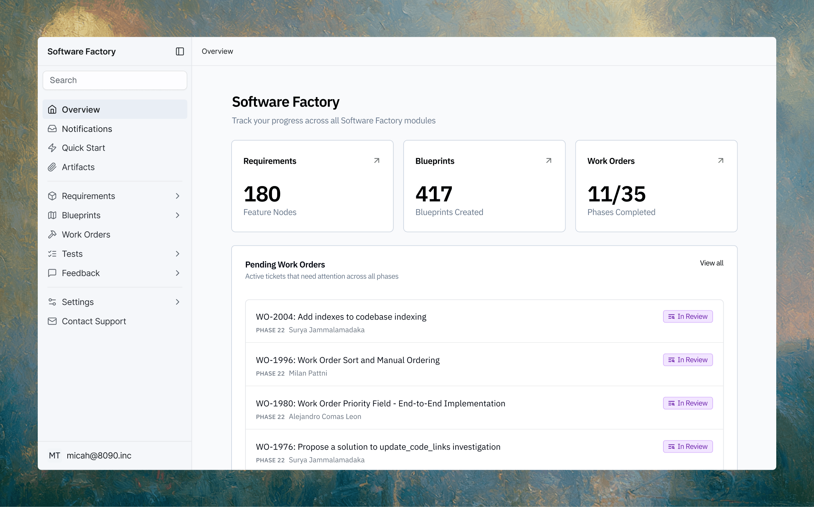

Executive Summary
On June 26, 2026, 8090 — the company founded by Chamath Palihapitiya — closed a $135M Series A led by Salesforce Ventures. What 8090 sells is a Software Factory, a platform that puts human engineers and AI agents into one system to build enterprise software together. The line the company leads with is not speed. It is that orchestrated AI agents run under human-led oversight. What matters is what it takes for that oversight to actually work in practice, not just stand as a marketing line.
Palihapitiya says having agents write code is already the easy problem. The hard part is holding a complex system together so it does not tear apart when dozens of agents and hundreds of engineers all touch it every week. Re-reading that code line by line is impossible at that scale. So oversight ends up resting not on the code itself but on the record of what an agent changed and on what basis it changed it.
The chain of artifacts — from requirements to blueprint to agent skill to test to deployment — is data. That makes this story less about how fast autonomy can go and more about a question of data design: on what basis does a person intervene and verify? The translation gets sharper the closer you get to regulated industries — healthcare, insurance, government — where you have to answer to an auditor.
Four numbers frame where this investment lands. The size of the round Salesforce Ventures led, the density of simultaneous work Palihapitiya names as the real problem, the depth of reverse-engineering 8090 pulled out of a legacy system, and the savings that result left with a regulated-industry customer.
$135M
8090 Series A
Led by Salesforce Ventures · announced 2026-06-26
50 + 100
Agents · engineers
Changing the same system weekly · the problem Palihapitiya names
18M → 40 days
COBOL reverse-engineered
18M-line claims engine → 300K plain-language rules
$20M+
Claims savings over 4 years
Outbound claims down 80% · public health insurer case
What the $135M Bought
Chamath Palihapitiya is best known as an early Facebook executive turned venture investor. 8090, which he founded in 2024, set out to replace aging legacy software wholesale, and on June 26, 2026 it raised $135M in a Series A led by Salesforce Ventures. Angels in the round included Palo Alto Networks CEO Nikesh Arora and Quora co-founder Adam D'Angelo. The identity of the lead investor tells you something about the deal: Salesforce is not running a venture experiment here but is a party that knows, better than most, the demands of the enterprise systems its own customers face every day.
The product 8090 sells is a Software Factory. The company describes it as a system that puts human teams and AI agents into a single governed, multiplayer platform to build software together. It turns requirements written in natural language into a Blueprint and then into code, and it ships an Agent Skills toolkit of coding instructions and scripts that third-party agents can use. Every change runs through quality testing before it reaches production. The phrase the company puts out front is that orchestrated AI agents operate under human-led oversight, and what it says it sells is not coding speed but control, visibility, and auditability.
Palihapitiya's diagnosis fits in one sentence. AI can write code, but the hard part of enterprise software is keeping the thing from tearing apart when dozens of agents and hundreds of engineers change the same complex system every week. He treats agents generating code as a solved problem and sells the orchestration and oversight that keep it from collapsing. As one analyst put it, 8090 is not selling a model; it is selling the layer that sits on top of the model.
What stands out is that 8090 leads with oversight not as an add-on feature but as the core thing it sells. Tools that write code for you are already common. What Salesforce Ventures put $135M behind is closer to the ability to bundle up how that code was built and changed so a person can retrace it afterward.
A Scale No Human Can Re-Read
"Human-led oversight" sounds reassuring. The question is what that oversight actually looks at. At a scale where 50 agents and 100 engineers touch the same system every week, a manager re-reading changed code line by line and approving it does not hold up. The volume of code has already outrun the speed at which a person can review it. If oversight means the same thing as code review, it collapses into a rubber stamp the moment the scale grows.
So the object of oversight shifts from the code itself to the process by which the code was made. Follow the chain of artifacts a Software Factory leaves behind and the shift becomes clear. Which requirement was the input, which blueprint it was translated into, which agent skill turned that blueprint into code, which tests it passed, and through which approval it was deployed. What a person oversees is not each line of code but each knot in that chain. Oversight becomes an act of reading the history of decisions rather than reading the code.
That shift matters most in regulated industries. The customers 8090 targets are healthcare, insurance, life sciences, aerospace, energy, manufacturing, finance, and the U.S. federal government — all domains where the basis for an output has to be proven to an auditor. Healthcare has to meet HIPAA, finance SOC 2 and ISO, government contracts FedRAMP, and in these organizations, "the AI made it" is not an acceptable answer when a system malfunctions. Saying oversight looks at the history rather than the code leads straight to a requirement: that history has to survive in a form you can hand to an audit.
Oversight Is Made of Data
Here the question has to change once. In a regulated organization, the first thing an auditor asks is not "who approved this." It is "on what basis was this approval possible, and can you show that basis again right now." The requirements, the blueprint, the agent skills, the test logs, the deployment record each have to survive — when they were generated, in which version, and how they connect to one another — for oversight to be a real intervention rather than an after-the-fact justification that finds a signature to attach. Only when lineage, versioning, and reproducibility of the artifacts are in place does the phrase "human-led oversight" acquire any substance.

The cases 8090 has disclosed show the demand is not abstract. It reverse-engineered 18 million lines of COBOL and assembly in one medical claims engine into 300,000 plain-language rules in 40 days, and it moved a public health insurer's payment-claims rules into a deterministic pre-filter, cutting the claims sent out to an external vendor by more than 80% and saving over $20M across four years. A life-sciences customer cut a diagnostic's time to launch from five years to four, and a manufacturing customer validates more than 10,000 parts in real time, the company says. Read as numbers alone this is an efficiency story, but for these changes to pass an audit in a regulated industry, each rule has to keep alongside it a record of which source it came from and how it was derived.
8090's partnership with EY points the same way. The two companies describe orchestrating a collaborative mesh of AI agents across the full development lifecycle — requirements, architecture, code, testing, infrastructure, operations — under human oversight. The whole development process is handed to agents, but every step of that process survives as a verifiable record. In the end, the oversight Palihapitiya sells is not a person watching from the side but oversight that holds together through the data agents leave as they work.
On speed of autonomy alone, the agents that build code are already fast enough. What separates procurement in a regulated industry is not that speed but whether a person can retrace the history of an agent's decisions and step in. The gap between a system that keeps the audit trail as a pipeline artifact from the start and one that tries to reconstruct the history after an incident becomes irreversible in front of an auditor.
Same Week, One Layer Down
A similar signal turned up in the same stretch of time. The Goldman Sachs–led $110M investment in Taktile this blog covered a few days ago was, in the end, another bet on the audit trail. When banks and insurers hand loan underwriting, fraud calls, and claims to agents, what regulators demand is not an accuracy rate but a reconstructable record of the judgment. The two investments point the same direction within a single week. In regulated industries, what gets sold is shifting from accuracy to traceability.
The two stories sit at different layers, though. Taktile deals with the audit trail behind an agent's individual business decisions — why was this loan denied. 8090 deals with a layer below that, where agents build and change the software that makes those decisions. The object of the audit trail drops from "why was this loan denied" to "why did this code change the way it did." A question about the basis for one decision has widened into a governance question about the entire development process, which is why this signal runs one step deeper.
Tie the two signals together and the picture completes. The software agents build, and the decisions that software makes, each demand an unbroken history. This is not a race over how far autonomy can accelerate but a contest over designing what a person intervenes and verifies on. That basis cannot be manufactured later if it was not kept as data from the start. Whether human-led oversight holds up comes down to whether the data agents leave as they work has been designed into an auditable form.
Why Pebblous Is Watching
In an era when agents build and change enterprise software, the fact that oversight turns on the data left in the process rather than the volume of code means the terrain shifts for a company that works with data. Proving how requirements, blueprints, agent skills, and test logs connect to one another is no longer a development team's optional concern but a condition a regulated-industry customer checks during procurement. For oversight to have substance, the quality and lineage of that history themselves have to be something you can diagnose.
Seen from the vantage point Pebblous has worked from — treating the quality and lineage of data as something you can diagnose — Salesforce's money flowing to 8090 and Goldman's money flowing to Taktile are the same market signal. The race to build accurate, fast agents has already leveled up, and what a regulated industry's procurement lead actually checks is whether the basis for a judgment and a change can be retraced.
Editor's Note. If agents build code and leave that process as logs, those logs answer "what was changed." The question that remains is "were the requirements and data behind that change representative and verified." Diagnosing the quality and lineage of the artifacts to turn that answer into evidence is the seat Pebblous DataClinic has aimed at. This does not replace the oversight of the agents; it holds together at the adjacent seat that diagnoses the data that oversight stands on.
References
This piece cross-checked the investment coverage, company announcements, and related industry material below. Deal size, product descriptions, and performance figures are based on the company's statements and the reporting that cites them.
Investment & Industry Coverage
- 1.Business Wire (2026-06-26). "8090 Raises $135M Series A to Accelerate Their Rollout of Software Factory." Link
- 2.SiliconANGLE (2026-06-29). "AI software development startup 8090 nabs $135M funding round." Link
- 3.The Next Web (2026-06-29). "Chamath Palihapitiya's 8090 raises $135M Series A for AI coding platform." Link
Company & Official Sources
- 4.8090 Solutions. "Software Factory" (product description & regulated-industry cases). Link
- 5.Yahoo Finance (2026). "Why Salesforce (CRM) Is Building an Audit Trail for Enterprise AI Agents." Link
※ Performance figures (18M lines of COBOL reverse-engineered in 40 days, claims down 80% and $20M+ saved over 4 years, diagnostic time to launch cut from 5 to 4 years, 10,000+ parts validated in real time) are based on reporting that cites 8090 and its customers. The original input sources — techstartups.com and startuphub.ai — do not carry this deal directly, so the deal itself was cross-checked against the primary and press sources above.